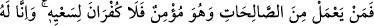
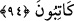
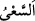
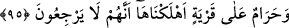
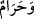

94. Bu durumda her kim mümin olarak iyi davranışlar yaparsa onun çabasını
görmezlikten gelmek olmaz. Zira biz onu yazmaktayız.
“Bu durumda her kim mümin olarak” yâni Allah’a ve peygamberlerine inandığı
halde bazı “iyi davranışlar yaparsa onun çabasını görmezlikten gelmek olmaz.”
Yaptığı iyi işlerin sevâbından mahrum kalmaz.
Burada sevâbı men’ anlamında istiâre yoluyla “küfrân” kelimesi kullanılmıştır.
Nitekim sevab verme anlamında da istiâre yoluyla “şükür” kelimesi kullanılır. Yâni
yapılan işin reddedilmesi ve sevâbının verilmemesi, nimeti gizlemek ve inkâr etmek
demek olan küfrâna benzetilmiştir. Amelin kabûlü ile karşılığında sevâb verilmesi ise
kendisine nimet verilenin nimet verene şükür/teşekkür etmesine teşbih edilmiş ve ona
da “eş-şükr” denilmiştir. Nitekim Allah Teâlâ şöyle buyurur:“Doğrusu Rabbimiz çok
bağışlayandır, şekûrdur, yâni çok nimet verendir.” (Fâtır, 35/34)
“__WORD__ aslında hızlı yürümektir. O, koşmaktan daha aşağıdır. Hayır olsun, şer olsun
yapılan işe önem vermek anlamında da kullanılır. Çoğunlukla ise övgüye değer işler
için kullanılır.
“Zira biz onu” yâni onun çabasını “yazmaktayız.” Yâni amel defterlerinde tesbit
etmekte ve onlardan hiçbir şeyi eksik bırakmamaktayız. İyilerin ücreti Hak katında zâyi
olmaz. Allah, iki dünyada da iyilerin mükâfâtını zâyi etmez.
95. Helâk ettiğimiz bir belde için artık (yeniden mâmur olmak) imkânsızdır;
çünkü onlar geri dönemeyeceklerdir.
“Helâk ettiğimiz bir belde için artık yeniden mâmur olmak imkânsızdır; çünkü
onlar geri dönemeyeceklerdir.” Bu cümle, önceki âyetteki “Halbuki hepsi bize
döneceklerdir” sözünün muhtevâsını açıklayıcı mâhiyettedir.
Âyetteki “__WORD__ ifâdesi, mümteniu‘l-vücûd (varlığı imkânsız olan şey) için istiâre
olarak kullanılmıştır. Çünkü haram ve varlığı imkânsız olan şeyin her ikisi de meydana
gelmesi istenmeyen şeylerdir.
Âyetin anlamı şöyledir: “Helâk edilen bir ülke halkının yaptıklarının karşılığını
görmek üzere bize dönmemeleri imkânsızdır. İmkânsızlık herkese şâmil olduğu halde
onların geri dönemeyeceklerinin özellikle zikredilmesi, “Halbuki hepsi bize
döneceklerdir.” âyetinin ifâde ettiği üzere herkesin geri dönüşü olmadığı içindir. Çünkü
öldükten sonra yeniden diriltilmeyi ve geri döndürülmeyi inkâr edenler onlardır.
et-Te’vîlâtü’n-Necmiyye’de şöyle der: “Âyet, kötü îtikad ve şer‘î muhâlefetler